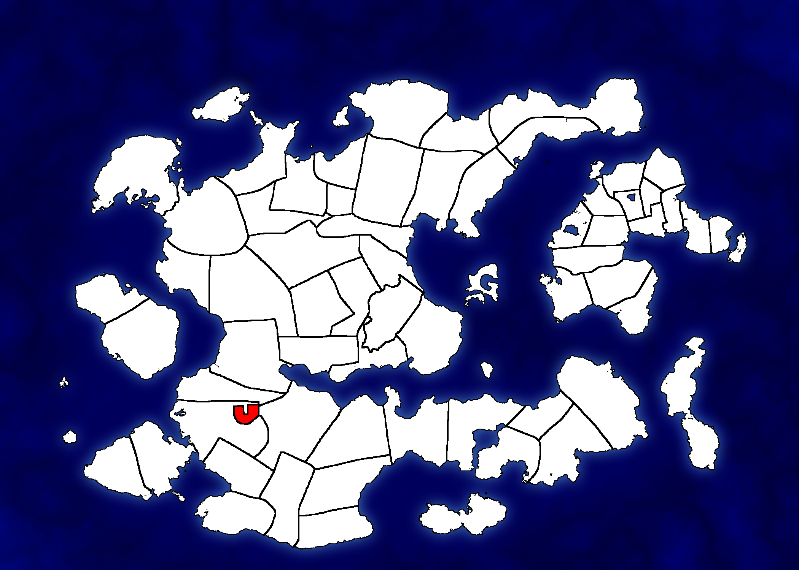
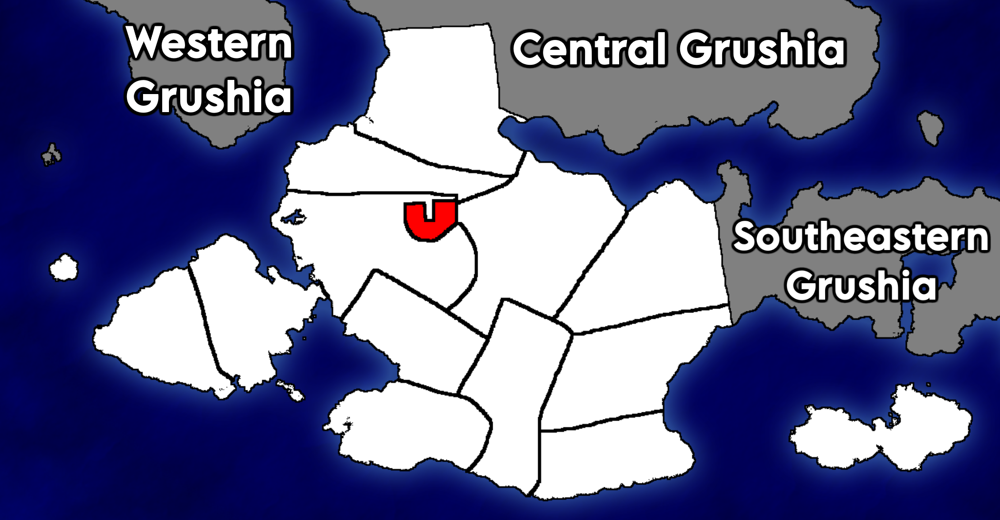
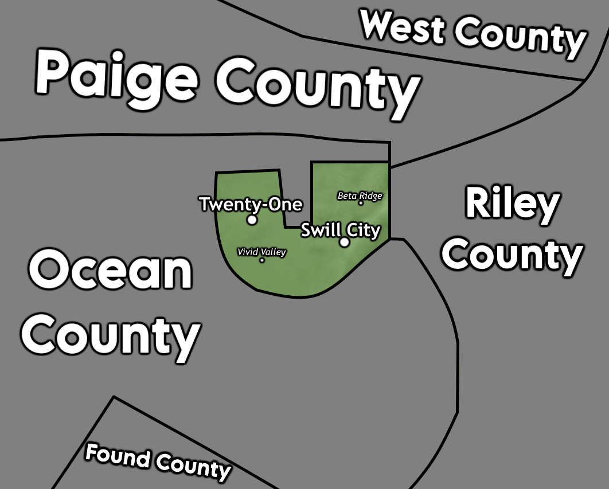

You County, Southern Grushia
You County is a county located in the Grushian region of Southern Grushia and is the smallest county in Grushia by area. In the 2020 Grushian Census, it had a population of 96,771. It's largest city is Twenty-One.
Maps

Location within Grushia

Location within the region of Southern Grushia

Detailed map of You County
History
You County was formed in 1991 out of Ocean County. This change came after Ocean County Sheriff, Tails McGails, met with the Grushian President at the time, James R. Atio, in September 1990 and proposed that Ocean County voluntarily secede some territory in the shape of a 'U' to form a new county. When the President asked him why he chose that shape, McGails replied simply with "because I think it's funny." Upon a unanimous refernendum with the Ocean County Board of Supervisors, the territory was split off and officially declared a new county on June 16, 1991. During this change, district 4 of Ocean County, was transferred over to become the sole district of the You County Board. This was shortlived as the district was split up into 3 smaller districts by the President in March 1992.
Geography
Climate and weather
You County tends to mirror surrounding counties' weather, although, due to its lower elevation, it can have above-average summer temperatures. Average temperatures (2016-2021) have ranged from a low of 51°F to a high of 88°F in January, as well as a low of 25°F to a high of 49°F in July.
Due to it's inland location in Grushia, it is only ever affected by weakened cyclones or their remnants. Stronger cyclones could theoretically make it to You County still as a major hurricane if their path was perfect, but this is unlikely.
Adjacent counties